Mile Vergara
Por: Jerrika Lozano @mileciangel
@mileciangel
 Mile Vergara
Mile Vergara
Reconocida cantante, actriz, presentadora de televisión, psicopedagoga y madre de dos hijos, no tiene problema en exhibir su cédula y señalar la fecha de su nacimiento: el 7 de octubre de 1960, 58 años bien vividos; esta sincelejana que ha hecho de su existencia un templo de las artes escénicas, la cultura musical y espiritualidad nos deja ver a través de fotografías muchos recuerdos que han marcado su vida a nivel personal y profesional.
| 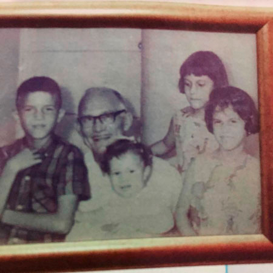 Muy sonriente junto a su abuelo materno Enrique de la Espriella 1965 |
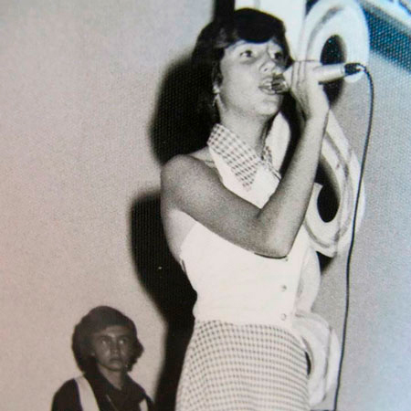 Su tercera presentación en Sincelejo, Teatro Colombia 1973 |
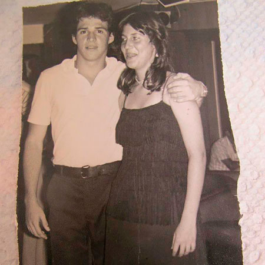 Junto a su primer amor Nicolás Arrazola 1973 al 1978 |
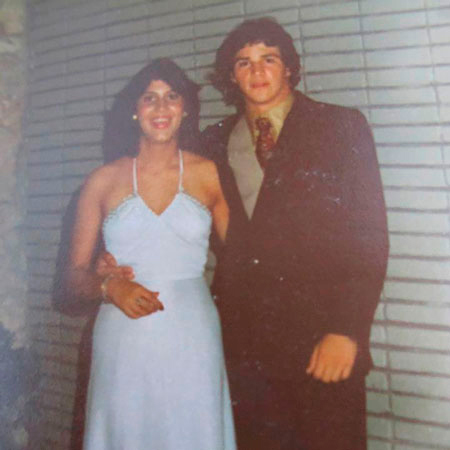 Junto a su primer amor Nicolás Arrazola 1973 al 1978 |
| 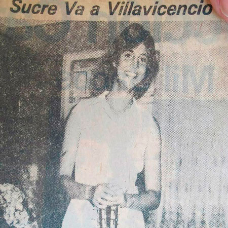 Es nombrada Señorita Sucre en el Reinado de la Canción en Villavicencio 1975 |
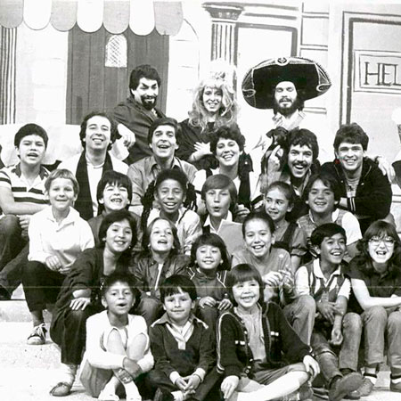 Pequeños Gigantes 1982 |
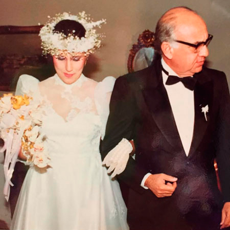 Camino al altar junto a su padre, Bogotá 1985 |
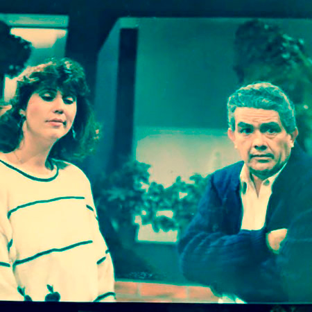 Novela “No Juegues Con Mi Vida” RTI Televisión 1990 |
| 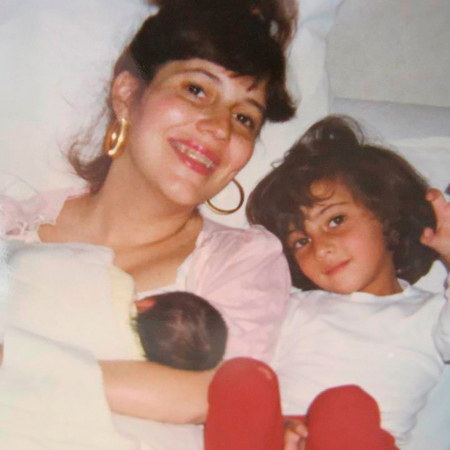 La familia crecía, después del milagro de la vida toma en brazos a su bebe 1992 |
Novela “Chepe Fortuna y Casa De Reinas” del 2011 al 2013 |
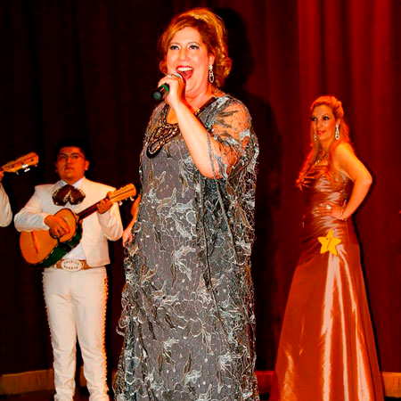 Nueva York 2013 |
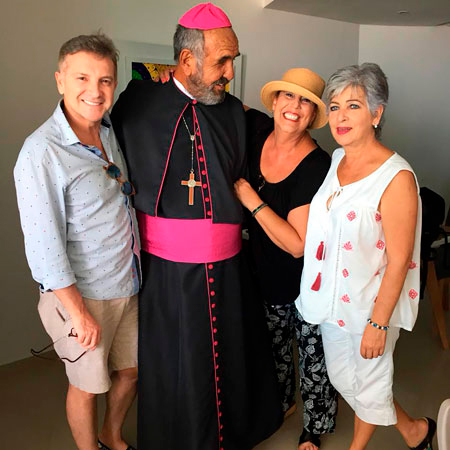 Película “La Médium Del Venerable y cortometraje San Patacón” |